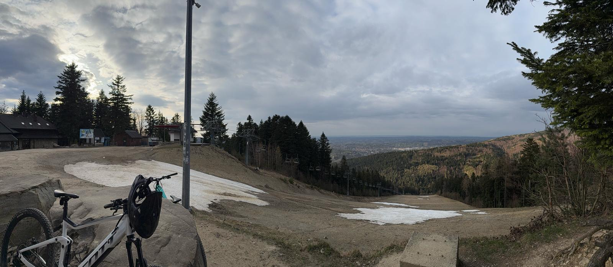
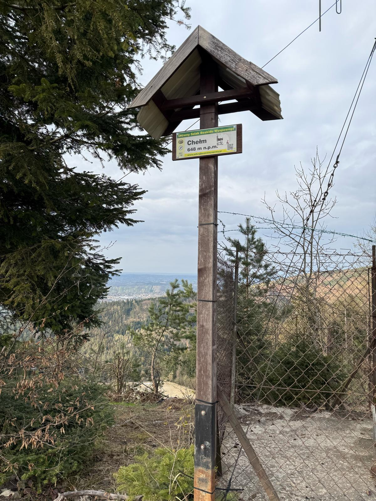
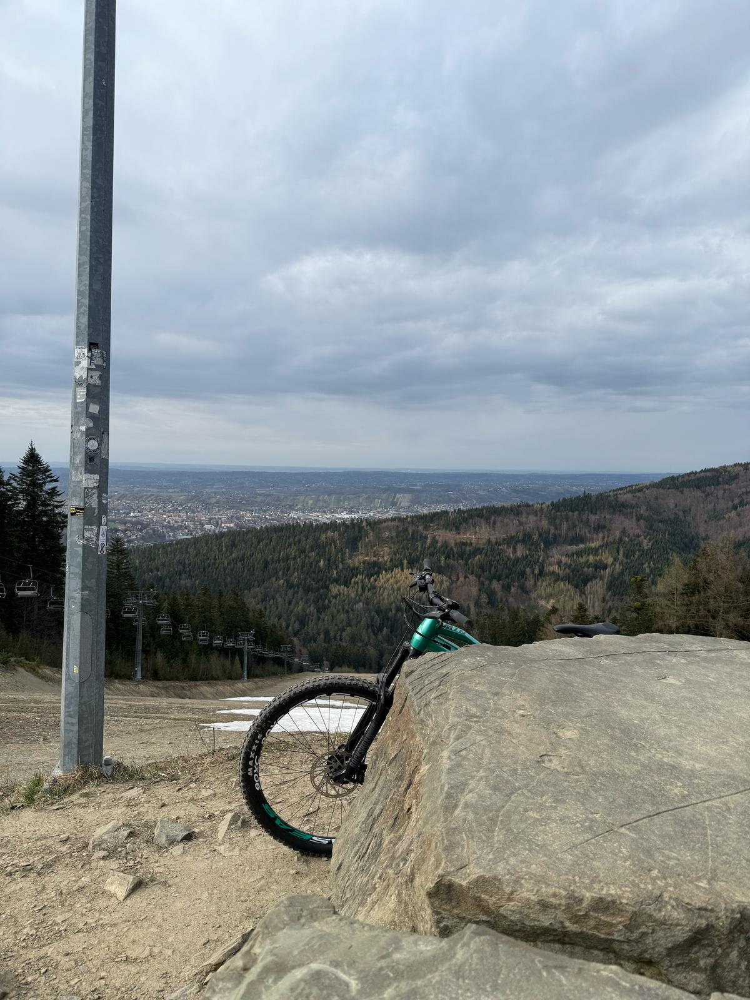
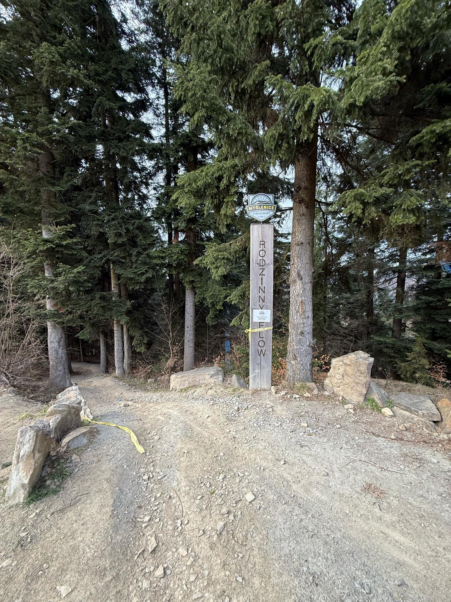

Góra Chełm w Myślenicach to jedno z najciekawszych miejsc w tej okolicy. Ma 533 metry wysokości, co sprawia, że nie jest zbyt trudna do zdobycia, ale widoki z jej szczytu są naprawdę imponujące. Góra znajduje się w Beskidzie Wyspowym, niedaleko centrum Myślenic.
Na szczycie Góry Chełm stoi wieża widokowa, z której można podziwiać piękne widoki na Myślenice i okoliczne góry, takie jak Beskid Wyspowy, Gorce, a przy dobrej pogodzie nawet Tatry. Jest to miejsce, gdzie można zrobić przerwę w wędrówce i odpocząć, podziwiając krajobraz.
Góra ma także ciekawą historię. W średniowieczu była ważnym punktem obronnym. Dziś jest popularnym celem wycieczek turystycznych, a także miejscem, gdzie organizowane są różne wydarzenia sportowe, takie jak biegi czy rajdy rowerowe.
Na szczycie znajduje się także schronisko, w którym można odpocząć i spróbować regionalnych potraw. W okolicy są liczne ścieżki turystyczne, które prowadzą przez lasy i wzniesienia. To świetne miejsce na spacery, a także na bardziej wymagające wędrówki.
Góra Chełm to idealne miejsce na aktywny wypoczynek. Jest łatwo dostępna, a widoki z niej zapadają w pamięć. Warto wybrać się tam na wędrówkę, szczególnie jeśli lubi się spędzać czas na świeżym powietrzu.




Powrót do strony głównej...